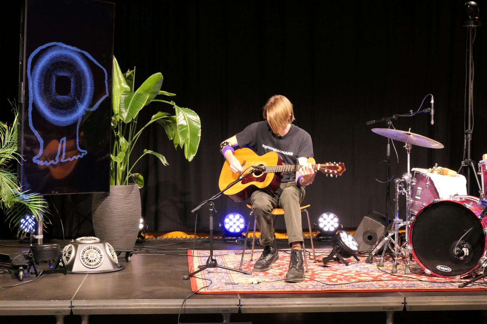
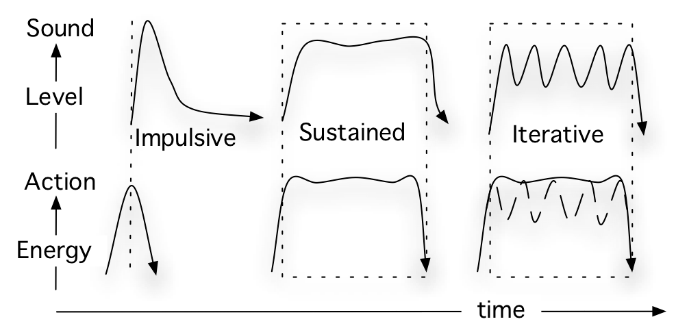
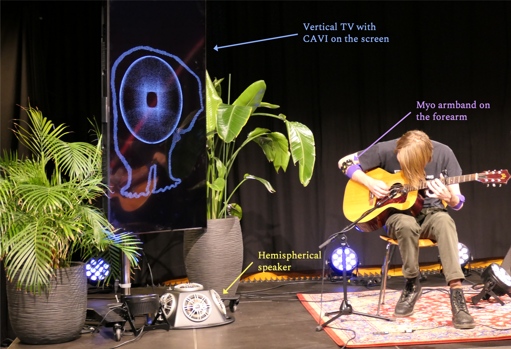
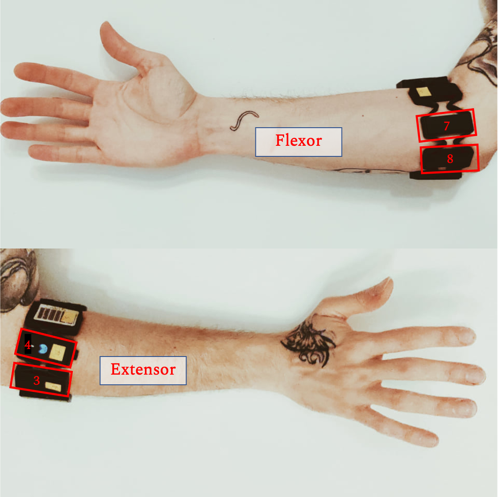
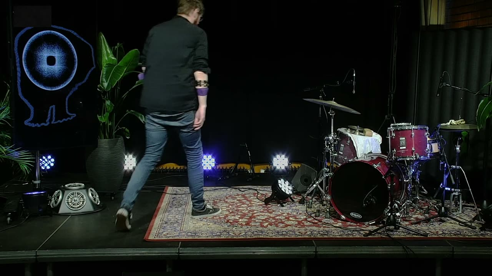
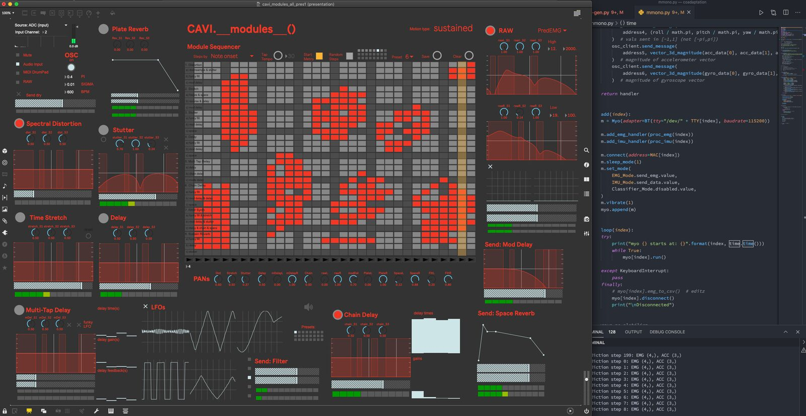
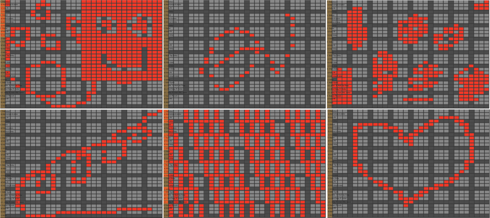

CAVI: A Coadaptive Audiovisual Instrument--Composition
Abstract
This paper describes the development of CAVI, a coadaptive audiovisual instrument for collaborative human-machine improvisation. We created this agent-based live processing system to explore how a machine can interact musically based on a human performer’s bodily actions. CAVI utilized a generative deep learning model that monitored muscle and motion data streamed from a Myo armband worn on the performer’s forearm. The generated control signals automated layered time-based effects modules and animated a virtual body representing the artificial agent. In the final performance, two expert musicians (a guitarist and a drummer) performed with CAVI. We discuss the outcome of our artistic exploration, present the scientific methods it was based on, and reflect on developing an interactive system that is as much an audiovisual composition as an interactive musical instrument.
Author Keywords
Embodied interaction, musical agents, deep learning, EMG, audiovisual, shared control, improvisation
CCS Concepts
•Applied computing → Sound and music computing; Performing arts; •Computing methodologies → Intelligent agents;
Introduction
New interfaces for musical expression (NIMEs) have employed a variety of machine learning (ML) techniques for action–sound mappings since the early 1990s [1]. Over the last decades, we have seen a growing interest in researching musical agents within the broader field of artificial intelligence (AI) and music [2]. The term agent comes from the Latin agere, meaning “to do” [3]. An agent's sole task might be to recognize the music's particular rhythm or track simple musical patterns, such as repeating pitch intervals [4]. Such an artificial agent concerned with tackling a musical task is what we call a musical agent.
Drawing on literature reviews of AI and multi-agent systems (MAS) for music, such as Collins [5] and, more recently, Tatar & Pasquier [6], we have seen that most such systems prioritize using auditory channels (symbolic, audio, or hybrid) for interaction. However, body movement is also integral to musical interaction and a focal point in developing and performing with NIMEs. What is relatively underexplored is how musical agents can interact with embodied entities, for example, human performers, other than listening to the sounds of their actions. Furthermore, exploring novel artistic concepts and approaches beyond conventional sound and music control can often become of secondary importance in the academic discourses of AI and MAS. Inspired by one of Cook’s principles for designing NIMEs: “make a piece, not an instrument or controller” [7], we started this project with these two research questions:
How can embodied perspectives be included when developing musical agents?
How can AI allow us to diversify artistic repertoires in music performance?
While the former question concerns the implementation of specific techniques and methods, the latter points to conceptual, historical, and phenomenological contexts of the new music technologies being used. This paper continues our entwined exploration of what we call shared control between human performers and artificial agents in interactive performance. This time we have developed an audiovisual instrument that uses deep learning to generate its own control signals driven by the performer's previously executed actions. After reflecting on some previous works, we present a self-report regarding the realization of CAVI and reflect on its use in performance (Image 1).


From CAVI's first public performance. CAVI played two sets, the one here is featuring Christian Winther on guitar. The human musicians were placed on the right side of the stage while CAVI was physically present through a visual display on a TV monitor and through sound coming out of a hemispherical speaker on the left side of the stage (Photo: Alena Clim).
Background
Shared Control
The motivation behind this project is an urge to explore how human and non-human entities can control sound and music together. Previously, we have explored such shared control through developing NIMEs based on various control strategies:
An instrument controlled by two human performers and a machine [8]
An “air instrument” with a chaotic control behavior [9]
An “air instrument” model based on the relationships between action and sound found in playing the guitar [10]
Instead of designing a multi-user system or solving a mapping problem with CAVI, we wanted to create an instrument that is experienced as more of an actor [11]; what Dahlstedt would call an interactive AI in his “spectrum of generativity” [12]. A prominent feature of such an instrument would be coadaptivity [13], which requires the performer to adapt and, more importantly, to waive the control of performing while still “playing together.” Here the emerging body–machine interaction can be enriching or competing, as it is based on the idea of challenging the performer’s embodied knowledge and musical intentions on their (acoustic) instrument. One can find a similar artistic urge and curiosity in, for example, John Cage’s exploration of nonintention [14], cybernetic artists’ process-oriented approaches [15], collaboratively emergent character of free improvisation [16], as well as multi-user [17], and feedback [18] NIMEs that have explored varying levels of control loss. The next question is what type of conceptual apparatus can be used for the agent to track and perceive the embodied control of the performer.
Sound-producing Actions
A musical agent is an artificial entity that can perceive other musicians’ actions and sounds through sensors and act upon its environment by producing various types of feedback (sound, visuals, etc.). The perceptual inputs of the agent—often called percept—are based on physical signals, usually resulting from some type of physical motion. There are many types of music-related body motion [19], but in this context, we primarily focus on sound-producing actions. These can be subdivided into excitation actions, such as the right hand that excites the strings on a guitar, and modification actions, such as the left hand modifying the pitch [20]. As illustrated in Image 2, excitation actions can be divided into three main action–sound types [21] based on the sound categories proposed by Schaeffer [22]:
Impulsive: A fast attack resulting from a discontinuous energy transfer (e.g., percussion or plucked instruments).
Sustained: A more gradual onset and continuously evolving sound due to a continuous energy transfer (e.g., bowed instruments).
Iterative: Successive attacks resulting from a series of discontinuous energy transfers.


An illustration of three categories for the main action and sound energy envelopes resulting from different sound-producing action types. The dotted lines correspond to the duration of contact during the excitation phase.
In previous work [23], we have shown that the resultant sound energy envelopes of an entire free improvisation can be accurately predicted using a dataset of muscle signals akin to the three fundamental action–sound types. If so, it must also be possible to generate meaningful “next moves” solely based on the previously executed excitation actions. Predicting the next move in improvisation may sound like a logical fallacy. However, modeling the physical constraints akin to a particular embodied practice can help in (partly) solving the problem of defining a relatively meaningful space for what the model can generate. In other words, we train the model with examples of how fundamental music-related motion is executed by guitar players so that it can generate sound-producing action data experienced as somewhat coherent to the musician’s motion. Then, the newly generated data can be mapped to the live sound processing parameters in various ways. A suitable analogy can be two persons playing the same guitar, one exciting the string while the other modifying the pitch on the fretboard. In CAVI, this is achieved by mapping the model output to the audio effects parameters.
Body–Agent Interaction
There is a body of artistic and scientific work on musical AI and MAS (see Tatar & Pasquier [6], for an overview), but few examples of using body motion for interaction. The Robotic Drumming Prosthesis is a notable example of shared human-machine control of musical expression [24]. Another example is RoboJam [25], a system that enables call-and-response improvisation by interacting using taps, swipes, and swirls on a touchscreen. Eingeweide (German for internal organs) is a project that employs muscle sensing for robotic prosthesis control [26], stressing the interaction between the human body and AI from an artistic perspective. The multimedia performance–drama in Eingeweide is staged around an artificial organ that lives outside the human body and is partly independent of human control.
Visi & Tanaka used reinforcement learning (RL) to explore action-sound mappings between the performer's movement and the parameters of a synthesizer loaded with audio samples [27]. While exploring the feature space, the agent keeps proposing a new set of mappings and receives feedback from the performer. Thus, it exemplifies a system in which human and non-human entities negotiate control and agency. Lastly, AI-terity is a non-rigid NIME using a generative model for sound synthesis focusing on surprising and autonomous features within the control structures [28]. The result is a musical instrument that allows for complex interaction based on uncertainty. It thereby fulfills its artistic strategy of providing the user with less control than traditional instruments, hence a higher level of musical agency.
Interaction Concept
In a demonstration video, Martin shows how predictive modeling can be used in a call-and-response mode [29]. If you train the model with a dataset of improvised melodies on a keyboard, it “guesses” how you would carry on with the melody you started to play. This is similar to call-and-response systems developed for jazz improvisation, such as Pachet’s Continuator [30]. The main difference is that Martin uses a motion dataset as the input; the model generates control signals in response to or as a continuation of the user's actions, not the resultant sounds.
One interesting question is what can surprisingly emerge between a performer and a musical agent that somehow simulates the performer's likely actions by means of generative predictions? In CAVI, we use a predictive model that continuously tracks the performer's multimodal motion input—consisting of electromyogram (EMG) and acceleration (ACC) data—and generates new virtual actions that feel both surprising and familiar. The statistical results from our previous study [23], showed significant generalizability only for the data from the right forearm (responsible for the excitation actions). In contrast, the left forearm muscles exhibited quite peculiar patterns. Thus, following a series of training and test sessions using data from both forearms, we decided to limit the control signals to be generated solely based on the performer's excitation actions.
In brief, CAVI has been designed in three parts:
A generative model trained on muscle and acceleration data
An automated time-based audio effects engine and a visual representation
A self-regulation loop based on tracking sound and music features
A sketch of the design can be seen in Image 3. The idea is that the acoustic sound from the performer’s instrument is live-processed by CAVI. These two integrated “circuits” and the feedback channels between them represent the closed-loop design of the instrument.

A conceptual interactivity diagram for CAVI and the musician. In addition to the musician’s dry output, the instrument’s sound is processed by CAVI in a closed feedback loop.
Implementation
The hardware setup of CAVI includes:
a Myo armband that is placed on the right forearm of the performer
two laptops running Python scripts and Max/MSP/Jitter patches
a vertical TV screen
a hemispherical speaker
An example of how the setup looked like in the system's premiere can be seen in Image 4. CAVI was “embodied” on stage through a human-sized screen and a speaker playing at the same level as the acoustic guitar. This helped balance the visual and sonic output of the human and machine performers.


A photo captured during CAVI’s premiere in Oslo in 2021. CAVI is “embodied” visually through a representation on the vertical screen and sonically through the hemispherical speaker on the floor. The performer, Christian Winther, wears the Myo armband on the right forearm (Photo: Alena Clim).
Sensor Dataset
CAVI builds on a dataset collected in a previous laboratory study of the sound-producing actions of guitarists [23]. The particular dataset used in this project consists of EMG and ACC data of thirty-one guitarists playing a number of basic sound-producing actions (impulsive, sustained, and iterative) and free improvisations. We used two systems to capture EMG in the recordings: a medical-grade system from Delsys and the consumer-grade Myo interface. The Delsys system has a 2000 Hz sample rate and is more suitable for analysis. However, the Myo armband is superior for interactive applications, including NIMEs [31]. Drawing on previous work on hand-gesture recognition models [32], we chose four EMG channels that correspond to extensor carpi radialis longus and flexor carpi radialis muscles. The data preparation follows a similar synchronization, alignment, normalization, and filtering procedure as our previous pipeline for creating the “air guitar” model [23].
Signal Acquisition and Processing
The Myo armband is connected to the computer via Bluetooth. The EMG data is acquired at 200Hz, while the ACC data, is at 50 Hz; both are received via a custom Python script [33] based on Martin’s myo-to-osc client [34]. The signals are then processed as follows:
EMG: The root-mean-square (RMS) is calculated to reduce the dimension of discrete signals from the Myo armband channels 3-4-7-8 (Image 5). The moving RMS of a discrete signal ,x2,…,xn)⊺ with n components is defined by:
ACC: The simple moving average (SMA) is calculated using a sliding window to average over a set number of time periods. The SMA is basically an equally weighted mean of the previous n data:
These two processed signals are then queued in dedicated threads and into the model.


We chose four of Myo armband’s eight available EMG channels. The corresponding electrodes cover the extensor carpi radialis longus (ch. 3-4) and flexor carpi radialis muscles (ch. 7-8).
Model Architecture
In our previous project [23], we had found a satisfactory long short-term memory (LSTM) recurrent neural network (RNN) model [35]. It could predict the sound energy envelope of improvised recordings based on a training dataset of solely basic actions. However, in CAVI, we focused on generating new control signals instead of mappings. Thus, we shifted from a model that learns the discriminative properties of data to a modeling framework that makes predictions by sampling from a probability distribution. While the former learns the boundaries of the data, the latter captures how it is distributed in the data space. An analogy would be that while one approach predicts the ingredients of a dish, the other tries to re-cook from the taste it remembers. One way of doing that with sequential data is by combining an RNN with a mixture density network (MDN) [36]. MDRNNs have, over the years, proved to have a generative capacity in different types of projects, including speech recognition [37], handwriting [38], and sketch drawing [39].
The aim has been to add a sampling layer to the output of an LSTM network, such as the one we previously trained for action–sound modeling to “play in the air.” MDNs treat the outputs of the neural network as parameters of a mixture distribution [40]. That is often done with Gaussian mixture models (GMMs), which are considered particularly effective in sequence generation [41], and appropriate for modeling musical improvisation processes [42]. The output parameters are mean, weight, and standard deviation. A GMM can be derived using these parameters of each mixture component (the amount is defined as a hyperparameter) and be sampled to generate real-valued predictions.

A simplified diagram of the signal flow in CAVI. The model receives EMG and ACC data from the Myo armband. The MDRNN outputs the mixture distribution parameters, from which we sample a new window of EMG and ACC data. The generated data is sent to Max/MSP/Jitter, where the visuals are generated, and the dry acoustic instrument sound is processed through several effects modules. Notice that the Max patch also encapsulates the rule-based structure within which CAVI continuously tracks the audio outputs and makes the necessary adjustments.
As can be seen in Image 6, CAVI's model consists of an RNN with two layers of LSTM cells. Each LSTM cell contains 64 hidden units, based on findings from model comparisons from the previous study [23]. The second layer's outputs are connected to an MDN. As our GMM consists of Gaussian distributions, each representing a possible future action, the LSTM layers learn to predict the parameters of each of the five Gaussian distributions of MDN. To optimize an MDN, we minimize the negative log-likelihood of sampling true values from the predicted GMM for each example. This likelihood value is obtained with a probability density function (PDF). For simplicity in the PDF, these distributions are restricted to having a diagonal covariance matrix, thus the PDF has the form:
where π are the mixing coefficients, μ, the Gaussian distribution centers, σ, the covariance matrices and n is the number of values corresponding to EMG and ACC data contained in each frame.
The Adam optimizer [43] was used in the training until the loss on the validation set failed to improve for 20 consecutive epochs. This configuration corresponded to 56331 parameters. The loss is calculated by the keras-mdn-layer [44] Python package, which uses the Tensorflow probability library [45] to construct the PDF. In the generation phase, it was possible to continuously adjust the model's level of “randomness” by tweaking π and σ temperatures. For example, a larger π temperature results in sampling from different distributions at every time step. The Python script that is responsible for data acquisition, processing, running the model, and establishing the OSC communication, also receives incoming messages from Max so that the temperature parameters can be adjusted on the fly.
Sound Engine
In CAVI, we have implemented a musical strategy focused on live sound processing in collaborative improvisation. The system continuously generates new EMG and ACC data akin to the musician's excitation actions. The generated data streams are used as control signals mapped to parameters of digital audio effects (EFX) modules. This can be seen as playing the acoustic instrument through some EFX pedals while someone else is tweaking the knobs of the devices. We realized that as shown in Video 1 and Video 2; an electric guitarist and a drummer performed on their instruments while CAVI controlled the EFX parameters.
 ▶
▶A video clip of CAVI’s premiere featuring guitarist Christian Winther.

▶A video clip of CAVI’s premiere featuring drummer Dag Eirik Knedal Andersen.
CAVI's EFX modules primarily rely on time-based sound manipulation, such as delay, time-stretch, stutter, etc. The jerk of the generated ACC data triggers the sequencer steps. The graphical user interface of CAVI can be seen in Image 7, featuring a matrix that routes EFX sends and returns. Depending on user-defined or randomized routing presets, the EFX modules activate by the trigger the model generates (Image 8). The generated EMG data is mapped to EFX parameters. The real-time analysis modules track the musician's dry audio input and adjust EFX parameters according to pre-defined thresholds. These machine listening agents include trackers of onsets and spectral flux. For example, if the performer plays impulsive notes, CAVI increases the reverb time drastically, such that it becomes a drone-like continuous sound. If the performer plays loudly, CAVI decides about its dynamics based on the particular action type of the performer.


A screenshot of CAVI’s “cockpit” for inspecting the automated processes throughout the performance. The Max window is on the left and contains a grid where shapes can be drawn to determine the overall compositional structure. Notice the EFX modules surrounding the grid, each having individual send/return for interconnection with other modules. The Python script on the right is continuously retrieving, pre-processing, and windowing data from the Myo armband, before feeding it into the model, and finally streaming the generated data through OSC to the Max patch.
Unlike improvisation systems that rely on symbolic music-theoretical data and stylistic constraints, CAVI prioritizes building sound structures in which the performer is expected to navigate spontaneously and even forcefully from time to time. This navigation might be led by a particular sonic event where the performer's and CAVI's actions converge. The performer can focus on a global structure and follow the energy trajectories to influence the textural density. After all, even though CAVI also has “a life of its own,” echoing Kiefer’s comment on feedback instruments [18], it is not a fully autonomous agent.


The main control interface for the modules is a live-grid-based sequencer. The generated ACC's jerk (rate of change of acceleration) triggers the sequencer to the next step, which functions as a matrix that routes the EFX sends and returns. Whenever CAVI executes an action, the bar moves forward or jumps to another location. The performer can use the sequencer as a compositional tool by drawing patterns on a touch screen interface, editing or calling presets during the performance, or entirely randomizing these processes.
Visual Rendering
CAVI is an audiovisual instrument for aesthetic reasons and to relieve potential causality ambiguities. The “body” of the virtual agent is a digitized version of a hand drawing by Katja Henriksen Schia. CAVI's “eye” is designed in Max/Jitter using OpenGL as shown in Image 9. The design aims at presenting CAVI as an uncompleted, creepy, but cute creature, with legs too small for its body, no arms, a tiny mouth, and a big eye. The body contracts in the real-time animated version but does not make full-body gestures. Instead, the eye blinks from time to time when CAVI triggers a new event, opens wide when the density of low frequencies increases, or stays calm according to the overall energy levels of sound.

CAVI's virtual embodiment. The body contours of this musical AI “toddler” are hand-drawn by Katja Henriksen Schia. The eye is developed in Max/Jitter. It is based on two layers of jit.matrix: The first matrix contains the digitized pixels of the virtual body shape. The second matrix encapsulates 350*350 particles on a two-dimensional plane
Discussion
In this project, we continue exploring shared control between human performers and artificial agents in interactive performance. Acoustic instruments are usually built without a pre-defined theoretical or conceptual paradigm. They are sound makers that can be used in various musical styles and genres [46], and virtuosic skills are developed over decades. In contrast, interactive music performance systems require concepts and programming languages for a more or less pre-composed interactive scenario and sonic output [47]. Even though there are exceptions, many such interactive systems have limited embodied knowledge and they are often tailor-made for specific pieces or performers. Thus the work of a digital luthier [48] includes careful tailoring of tools, methods, and concepts, which is more in line with the work of traditional composers than acoustic luthiers. Technology-related choices, such as choosing a particular sensor or algorithm, inevitably become compositional choices. Thus it makes sense to talk about composed instruments [49].
In CAVI, our interaction design strategy focused on muscle and motion sensing. This was based on theories suggesting that sound-producing body motion constraints shape the musical experience and enhance agency perception [50]. Excitation actions of the right forearm, in particular, provide salient features of the resultant sound [23]. Rather than starting from scratch, we built our model on a pre-recorded multimodal dataset of guitarists’ excitation actions. This dataset of basic forearm strokes is quite limited, which is also one of the reasons we have labeled CAVI as a musical AI “toddler.” Even so, the model predictions' level of familiarity confirmed the embodiment theories. That is, all possible excitation actions executed on an acoustic instrument could be estimated using three fundamental motion types. The guitar, for instance, does not even afford three but two actions; you can only hit the string as a single or a series of impulses unless you use a bow on it. Thus, all excitation actions on the guitar can be narrowed down to two fundamental shapes (impulsive and iterative).
The musical agency is CAVI is largely based on its ability to surprise the performer. Surprising elements are vital for creating positive aesthetic experiences [51]. It should be noted that surprise in improvised music is different from the noise of a random number generator or Cagean chance operations [52]. We find it important to create a system that balances familiarity and surprise. Here temporal alignment, delay, and causality are essential factors. The predictability of newly introduced elements is momentary and contextual, and how much a musical agent is perceived as surprising or dull varies over time through a dynamic interplay between randomness and order.
The variability between predictability and randomness is also dependent on the particular sound repertoire of the (acoustic) instrument that is live-processed. For example, one of the sonic characters of the delay EFX is a pitch shift caused by a continuous delay time change. Manipulating the pitch out of tune can impact the performance of pitched (e.g., a guitar) and non-pitched (e.g., a drum set) instruments differently. Both a guitar and drum set can be seen as essentially percussive instruments since they primarily afford impulsive actions. However, only the guitar can play chords and melodies, leading to challenges if CAVI decides to use multiple layers of time-based EFX occupying most of the frequency spectrum. Such an effect would work better with a drum set using the spectral density as textural material to improvise over.
In the first performances, as shown in Video 1 and Video 2, we observed that CAVI became too predictable over time. This may be because the dataset it was trained on was primarily limited to “percussive” actions. Thus, CAVI’s generated control signals were limited to varying frequencies' impulses. Imagine playing the guitar; your right hand is only responsible for how frequently and strongly you hit the string, while the left hand modifies the pitch and other sound features. A sound-producing action model that excludes the other limb is conceptually problematic considering the relative configuration of body parts. Therefore, one of the priorities in future work will be modeling also modification actions. We are also interested in exploring the implementation of meaning-bearing and communicative body motion and how musical agents can perceive such gestures [53].
Throughout the process of developing and performing with CAVI, we have seen that it challenges traditional ideas of artistic ownership. For example, we are still trying to figure out how to properly register the first performances in the Norwegian system. Who should be registered as the composer(s) of the pieces performed? Who performed? The traditional Western approach of naming composers that “write” pieces for performers to play in a concert does not fit well in our case. Is CAVI a composer and/or performer? If yes, how should that be registered and credited? If not, what does it take for a musical agent to get such credits? The efficiency of the technologies used is not only related to how autonomous, or intelligent the tool is, nor how much initiative it can take, but also to how much it can initiate and what processes it can cause. That echoes the cybernetic artists’ vision of a shift from objects to behavior by blurring the boundaries in the triad artist/artwork/observer [54].
The importance of the environment is something we have considered and discussed throughout the development of CAVI. As Schiavio argues [55], the environment actively co-constitutes music together with the living bodies and their activities. The artificial agent may be “living” in the computer code, but its physical representation and relationship to its environment are important for how it is perceived. The performance space, microphone setup, and monitoring system are parts of the dynamic process of musicking. With that in mind, the room and technical rig contribute to the agency assigned to or shared with the musical agent. That is why we developed and set up CAVI with an audiovisual physical representation on stage. We believe such embodied perspectives are critical when developing artificial musical agents. We would also like to explore how artificial agents can be trained to adapt to environmental features in the future.
Conclusions
In this paper, we have presented the development of an agent-based audiovisual live processing instrument. Its core elements have been focused on shareability, generative modeling, closed-loop design, time-based sound effects, and unconventional control. We have aimed to implement an interactive scenario where human and machine agents can control the same sonic and musical parameters together. We did not want the musician and the agent to work in separate “layers.” Instead, the outcome was a joint expression of the musician and the instrument, which, in turn, reflected the musical choices of the programmer. In many ways, CAVI can be seen as an instrument–composition made by a programmer–composer.
Our exploration has shown that the technologies we use to make music carry agency and how we use these technologies strongly influence the music we make. The cultural, social, and political aspects of musicking were beyond this paper’s scope. However, these aspects are still present and should not be disregarded. This paper is one example of how music technology research can ask questions about agency and identity. We hope the embodied approach taken in CAVI can inspire others to explore models of shared musical agency.
Acknowledgments
We would like to thank the musicians that performed in the premiere of CAVI during MusicLab 6: Christian Winther and Dag Eirik Knedal Andersen. Thanks also to fourMs lab engineer Kayla Burnim, research assistant Alena Clim, and the Science Library crew for their huge effort in realizing the event. This work was partially supported by the Research Council of Norway (project 262762) and NordForsk (project 86892).
Ethics Statement
The dataset used to train CAVI was based on a controlled experiment carried out in the fourMs lab at the RITMO Centre for Interdisciplinary Studies in Rhythm, Time and Motion at the University of Oslo. Before conducting the experiments, we obtained ethical approval from the Norwegian Center for Research Data (Project Number 872789). Following the collection, the datasets and codes for running the experiments have been released online according to open research principles. The collected dataset has some limitations worth mentioning. Participants were recruited through the university website and social media during a relatively short timeframe. Unfortunately, this recruitment strategy resulted in a skewed gender balance. The dataset only contains data from one female participant, making it challenging to generalize the statistical results. Another limitation was the unnatural setting of playing in a controlled laboratory environment. Finally, the gift card award did not appeal to professional musicians, so all the thirty-six participants were primarily semi-professional musicians and music students. In future studies, we aim at recruiting a more representative group of participants and focus on creating a more ecologically valid performance setup.
Citations
- ↩Lee, M., Freed, A., & Wessel, D. (1991). Real-Time Neural Network Processing of Gestural and Acoustic Signals. 277–280.
- ↩Miranda, E. R. (2021). Handbook of Artificial Intelligence for Music: Foundations, Advanced Approaches, and Developments for Creativity. Springer.
- ↩Russell, S. J. (Stuart J. (2010). Artificial intelligence : a modern approach. Third edition. Upper Saddle River, N.J. : Prentice Hall. https://search.library.wisc.edu/catalog/9910082172502121
- ↩Minsky, M. (1981). Music, Mind, and Meaning. Computer Music Journal, 5(3), 28–44. https://doi.org/10.2307/3679983
- ↩Collins, N. M. (2006). Towards Autonomous Agents for Live Computer Music: Realtime Machine Listening and Interactive Music Systems [Phdthesis, University of Cambridge]. http://citeseerx.ist.psu.edu/viewdoc/download?doi=10.1.1.65.2661&rep=rep1&type=pdf
- ↩Tatar, K., & Pasquier, P. (2019). Musical agents: A typology and state of the art towards Musical Metacreation. Journal of New Music Research, 48(1), 56–105. https://doi.org/10.1080/09298215.2018.1511736
- ↩Cook, P. (2017). 2001: Principles for Designing Computer Music Controllers. In A NIME Reader (pp. 1–13). Springer.
- ↩Erdem, C., Schia, K. H., & Jensenius, A. R. (2019, June). Vrengt: A Shared Body-Machine Instrument for Music-Dance Performance. https://doi.org/10.5281/zenodo.3672918
- ↩Erdem, C., & Jensenius, A. R. (2020, June). RAW: Exploring Control Structures for Muscle-based Interaction in Collective Improvisation. https://doi.org/10.5281/zenodo.4813485
- ↩Erdem, C., Lan, Q., Fuhrer, J., Martin, C. P., Tørresen, J., & Jensenius, A. R. (2020). Towards Playing in the’Air’: Modeling Motion-Sound Energy Relationships in Electric Guitar Performance Using Deep Neural Networks. Proceedings of the SMC Conferences, 177–184.
- ↩Caramiaux, B., & Donnarumma, M. (2021). Artificial Intelligence in Music and Performance: A Subjective Art-Research Inquiry. In E. R. Miranda (Ed.), Handbook of Artificial Intelligence for Music: Foundations, Advanced Approaches, and Developments for Creativity (pp. 75–95). Springer International Publishing. https://doi.org/10.1007/978-3-030-72116-9_4
- ↩Dahlstedt, P. (2021). Musicking with Algorithms: Thoughts on Artificial Intelligence, Creativity, and Agency. In E. R. Miranda (Ed.), Handbook of Artificial Intelligence for Music: Foundations, Advanced Approaches, and Developments for Creativity (pp. 873–914). Springer International Publishing. https://doi.org/10.1007/978-3-030-72116-9_31
- ↩Tanaka, A., & Donnarumma, M. (2018). The Body as Musical Instrument. The Oxford Handbook of Music and the Body. https://doi.org/10.1093/oxfordhb/9780190636234.013.2
- ↩Cage, J. (1991). An Autobiographical Statement. Southwest Review, 76(1), 59–76. http://www.jstor.org/stable/43471424
- ↩Ascott, R. (1968). The Cybernetic Stance: My Process and Purpose. Leonardo, 1(2), 105–112. https://doi.org/10.2307/1571947
- ↩Sawyer, R. K., & DeZutter, S. (2009). Distributed creativity: How collective creations emerge from collaboration. Psychology of Aesthetics, Creativity, and the Arts, 3(2), 81–92. https://doi.org/10.1037/a0013282
- ↩Jordà, S. (2005). Multi-user instruments: models, examples and promises. Proceedings of the 2005 Conference on New Interfaces for Musical Expression, 23–26.
- ↩Kiefer, C., Overholt, D., & Eldridge, A. (2020). Shaping the behaviour of feedback instruments with complexity-controlled gain dynamics. https://doi.org/10.5281/zenodo.4813406
- ↩Jensenius, A. R., Wanderley, M. M., Godøy, R. I., & Leman, M. (2010). Musical Gestures: Concepts and Methods in Research. In R. I. Godøy & M. Leman (Eds.), Musical Gestures: Sound, Movement, and Meaning (pp. 12–35). Routledge. http://urn.nb.no/URN:NBN:no-62321
- ↩Cadoz, C. (1988). Instrumental Gesture and Musical Composition. ICMC 1988 - International Computer Music Conference, 1–12. https://hal.archives-ouvertes.fr/hal-00491738
- ↩Godøy, R. I. (2006). Gestural-Sonorous Objects: embodied extensions of Schaeffer’s conceptual apparatus. Organised Sound, 11(2), 149–157. https://doi.org/10.1017/S1355771806001439
- ↩Schaeffer, P. (1966). Traite des objets musicaux: essai interdisciplines. Éditions du Seuil.
- ↩Erdem, C., Lan, Q., & Jensenius, A. R. (2020). Exploring relationships between effort, motion, and sound in new musical instruments. Human Technology: An Interdisciplinary Journal on Humans in ICT Environments, 16(3), 310–347. https://doi.org/10.17011/ht/urn.202011256767
- ↩Tatar, K., & Pasquier, P. (2019). Musical agents: A typology and state of the art towards Musical Metacreation. Journal of New Music Research, 48(1), 56–105. https://doi.org/10.1080/09298215.2018.1511736
- ↩Bretan, M., Gopinath, D., Mullins, P., & Weinberg, G. (2016). A Robotic Prosthesis for an Amputee Drummer. arXiv:1612.04391 [Cs]. http://arxiv.org/abs/1612.04391
- ↩Martin, C. P., & Torresen, J. (2018). RoboJam: A Musical Mixture Density Network for Collaborative Touchscreen Interaction. In A. Liapis, J. J. Romero Cardalda, & A. Ekárt (Eds.), Computational Intelligence in Music, Sound, Art and Design (pp. 161–176). Springer International Publishing.
- ↩Donnarumma, M., & Pevere, M. (2018). Eingeweide. https://marcodonnarumma.com/works/eingeweide/
- ↩Visi, F. G., & Tanaka, A. (2020). Interactive Machine Learning of Musical Gesture. arXiv:2011.13487 [Cs]. http://arxiv.org/abs/2011.13487
- ↩Tahiroglu, K., Kastemaa, M., & Koli, O. (2021, June). AI-terity 2.0: An Autonomous NIME Featuring GANSpaceSynth Deep Learning Model. International Conference on New Interfaces for Musical Expression. https://doi.org/10.21428/92fbeb44.3d0e9e12
- ↩Martin, C. P. (2019). IMPS: Interactive Musical Prediction System: Demo Video. Zenodo. https://doi.org/10.5281/zenodo.2597494
- ↩Pachet, F. (2003). The Continuator: Musical Interaction With Style. Journal of New Music Research, 32(3), 333–341. https://doi.org/10.1076/jnmr.32.3.333.16861
- ↩Erdem, C., Lan, Q., & Jensenius, A. R. (2020). Exploring relationships between effort, motion, and sound in new musical instruments. Human Technology: An Interdisciplinary Journal on Humans in ICT Environments, 16(3), 310–347. https://doi.org/10.17011/ht/urn.202011256767
- ↩Erdem, C., Lan, Q., & Jensenius, A. R. (2020). Exploring relationships between effort, motion, and sound in new musical instruments. Human Technology: An Interdisciplinary Journal on Humans in ICT Environments, 16(3), 310–347. https://doi.org/10.17011/ht/urn.202011256767
- ↩Nymoen, K., Haugen, M. R., & Jensenius, A. R. (2015). MuMYO — Evaluating and Exploring the MYO Armband for Musical Interaction. In E. Berdahl & J. Allison (Eds.), Proceedings of the International Conference on New Interfaces for Musical Expression (pp. 215–218). Louisiana State University. https://doi.org/10.5281/zenodo.1179150
- ↩Phinyomark, A., Campbell, E., & Scheme, E. (2020). Surface electromyography (EMG) signal processing, classification, and practical considerations. In Biomedical signal processing (pp. 3–29). Springer.
- ↩Erdem, C., Lan, Q., & Jensenius, A. R. (2020). Exploring relationships between effort, motion, and sound in new musical instruments. Human Technology: An Interdisciplinary Journal on Humans in ICT Environments, 16(3), 310–347. https://doi.org/10.17011/ht/urn.202011256767
- ↩Erdem, C. (2021). CAVI. https://github.com/cerdemo/cavi (Original work published 2021)
- ↩Martin, C. P., Jensenius, A. R., & Torresen, J. (2018, June). Composing an Ensemble Standstill Work for Myo and Bela. https://doi.org/10.5281/zenodo.1302543
- ↩Erdem, C., Lan, Q., & Jensenius, A. R. (2020). Exploring relationships between effort, motion, and sound in new musical instruments. Human Technology: An Interdisciplinary Journal on Humans in ICT Environments, 16(3), 310–347. https://doi.org/10.17011/ht/urn.202011256767
- ↩Schmidhuber, J. (2009). Driven by Compression Progress: A Simple Principle Explains Essential Aspects of Subjective Beauty, Novelty, Surprise, Interestingness, Attention, Curiosity, Creativity, Art, Science, Music, Jokes. arXiv:0812.4360 [Cs]. http://arxiv.org/abs/0812.4360
- ↩Bishop, C. M. (1994). Mixture density networks (Technical Report NCRG/97/004). Neural Computing Research Group, Aston University,.
- ↩Schuster, M. (1999). On Supervised Learning From Sequential Data With Applications For Speech Recognition [Ph.D. Thesis, Nara Institute of Science]. https://citeseerx.ist.psu.edu/viewdoc/download?doi=10.1.1.17.1460&rep=rep1&type=pdf
- ↩Graves, A. (2013). Generating Sequences With Recurrent Neural Networks. arXiv:1308.0850 [Cs]. http://arxiv.org/abs/1308.0850
- ↩Ha, D., & Eck, D. (2017). A Neural Representation of Sketch Drawings. arXiv:1704.03477 [Cs, Stat]. http://arxiv.org/abs/1704.03477
- ↩Ellefsen, K. O., Martin, C. P., & Torresen, J. (2019). How do Mixture Density RNNs Predict the Future? arXiv:1901.07859 [Cs, Stat]. http://arxiv.org/abs/1901.07859
- ↩Goodfellow, I., Bengio, Y., & Courville, A. (2016). Deep Learning (F. Bach, Ed.). MIT Press.
- ↩Martin, C. P., & Torresen, J. (2019). An Interactive Musical Prediction System with Mixture Density Recurrent Neural Networks. https://doi.org/10.5281/zenodo.3672952
- ↩Erdem, C., Lan, Q., & Jensenius, A. R. (2020). Exploring relationships between effort, motion, and sound in new musical instruments. Human Technology: An Interdisciplinary Journal on Humans in ICT Environments, 16(3), 310–347. https://doi.org/10.17011/ht/urn.202011256767
- ↩Kingma, D. P., & Ba, J. (2014). Adam: A method for stochastic optimization. arXiv Preprint arXiv:1412.6980.
- ↩Martin, C., & Duhaime, D. (2019). cpmpercussion/keras-mdn-layer v0.3.0. Zenodo. https://doi.org/10.5281/zenodo.3526753
- ↩Dillon, J. V., Langmore, I., Tran, D., Brevdo, E., Vasudevan, S., Moore, D., Patton, B., Alemi, A., Hoffman, M., & Saurous, R. A. (2017). TensorFlow Distributions. arXiv:1711.10604 [Cs, Stat]. http://arxiv.org/abs/1711.10604
- ↩Kiefer, C., Overholt, D., & Eldridge, A. (2020). Shaping the behaviour of feedback instruments with complexity-controlled gain dynamics. https://doi.org/10.5281/zenodo.4813406
- ↩Jensenius, A. R. (2022). Sound Actions: Conceptualizing Musical Instruments. The MIT Press.
- ↩Magnusson, T. (2009). Epistemic tools: the phenomenology of digital musical instruments [Doctoral, University of Sussex]. http://sro.sussex.ac.uk/id/eprint/83540/
- ↩Jordà, S. (2004). Instruments and players: Some thoughts on digital lutherie. Journal of New Music Research, 33(3), 321–341.
- ↩Schnell, N., & Battier, M. (2002). Introducing Composed Instruments, Technical and Musicological Implications. Proceedings of the International Conference on New Interfaces for Musical Expression, 156–160. https://doi.org/10.5281/zenodo.1176460
- ↩Godøy, R. I. (2018). Motor Constraints Shaping Musical Experience. Music Theory Online, 24(3). https://mtosmt.org/issues/mto.18.24.3/mto.18.24.3.godoy.html
- ↩Erdem, C., Lan, Q., & Jensenius, A. R. (2020). Exploring relationships between effort, motion, and sound in new musical instruments. Human Technology: An Interdisciplinary Journal on Humans in ICT Environments, 16(3), 310–347. https://doi.org/10.17011/ht/urn.202011256767
- ↩Menninghaus, W., Wagner, V., Hanich, J., Wassiliwizky, E., Jacobsen, T., & Koelsch, S. (2017). The Distancing-Embracing model of the enjoyment of negative emotions in art reception. Behavioral and Brain Sciences, 40. https://doi.org/10.1017/S0140525X17000309
- ↩Jensen, M. G. (2009). John Cage, Chance Operations, and the Chaos Game: Cage and the “I Ching.” The Musical Times, 150(1907), 97–102. http://www.jstor.org/stable/25597623
- ↩Jensenius, A. R., & Erdem, Ç. (2021). Gestures in ensemble performance. Together in Music: Coordination, Expression, Participation, 109.
- ↩Ascott, R. (2002). Behaviourist Art and the Cybernetic Vision. In R. Packer & K. Jordan (Eds.), Multimedia. From Wagner to Virtual Reality (pp. 104–120). W. W. Norton & Company. https://www.semanticscholar.org/paper/Roy-Ascott%253A-Behaviourist-Art-and-the-Cybernetic-Ascott/a984eac0c55817c4d05276d2956c0aa0d4f263bf
- ↩Schiavio, A. (2015). Action, Enaction, Inter(en)action. Empirical Musicology Review, 9(3–4), 254–262. https://doi.org/10.18061/emr.v9i3-4.4440